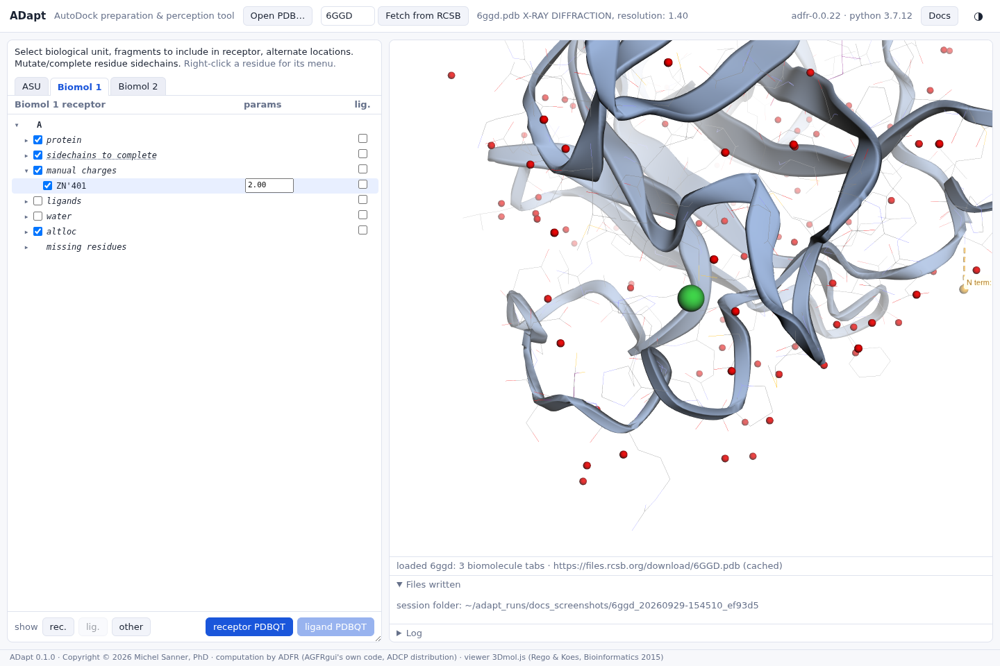
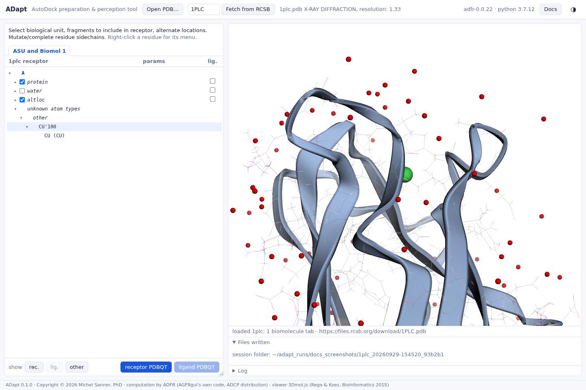

Metals, ions and unsupported atoms
Give a metal the charge AutoDock needs; know which atoms AutoDock cannot type at all.
Manual charges
AutoDock 4.1 has parameters for zinc, magnesium, calcium, iron and manganese, but the Gasteiger model that charges the rest of the receptor cannot charge them. Single-atom residues of these elements are therefore listed under manual charges, with the formal charge that will be written in the params column. They are not in the receptor by default. Check one when it matters for your pocket, for instance a catalytic zinc.

| Element | Default charge (ADFR) |
|---|---|
| Zn, Mg, Ca, Fe | +2 |
| Mn | +4 |
| Br | +1 |
An edited charge is written to the receptor file and recorded in the session. The Br default is ADFR's table as it stands; check it before relying on it.
Unsupported atom types
A residue with an atom outside the AutoDock 4.1 atom types is listed under unknown atom types, with the offending atoms beneath it. These entries have no checkboxes: ADapt cannot write them into a PDBQT file.

Far from the pocket, leaving such an atom out is harmless. If it can interact with the ligand, it needs a decision ADapt does not make for you: replace it with a supported atom of similar properties before loading the file, or choose another docking site.